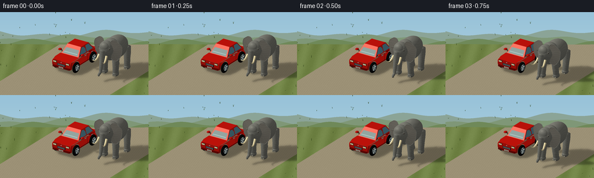
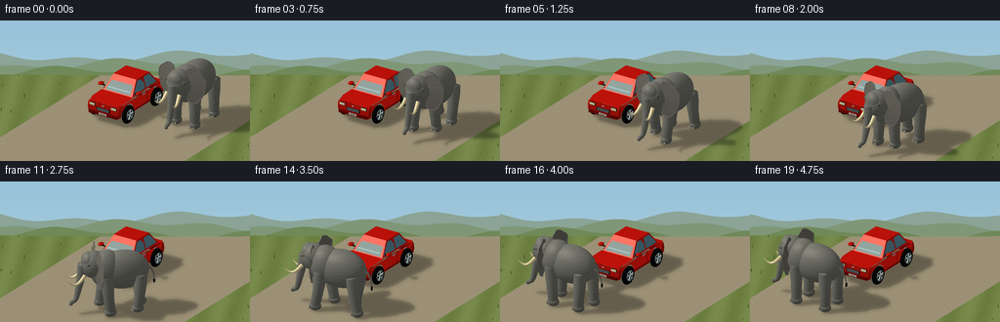
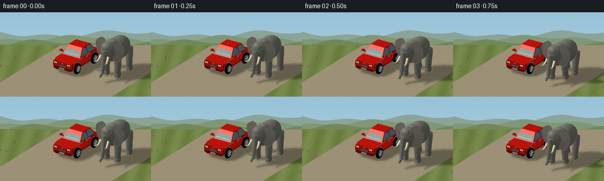

CODING AGENTS AS PIXEL WORLD MODELS
traex/GPT-6.1-Sol · dynamic_spatial_relationship_0067
点击播放 · 原生 RGB 像素
逐轮保存的候选
回放视频、检查图与代码变化。
每份候选均可单独播放。实际图片检查记录在下方工具轨迹中。
候选 01播放与检查图
点击播放 · 原生 RGB 像素

展开代码变化
--- 上一保存版本
+++ 本次保存版本
@@ -0,0 +1,421 @@
+import json, math
+from pathlib import Path
+import numpy as np
+from PIL import Image, ImageDraw, ImageFilter
+import artifact_io
+
+ROOT=Path(__file__).resolve().parent
+SPEC=json.loads((ROOT/'task_spec.json').read_text())
+W,H=SPEC['width'],SPEC['height']; SS=3; WW,HH=W*SS,H*SS
+# A small, fully procedural triangle renderer. No external assets or rendering engine.
+CAM=np.array([8.,-12.,7.2]); TARGET=np.array([.65,-1.05,1.15])
+D=(TARGET-CAM); D/=np.linalg.norm(D)
+R=np.cross(D,[0,0,1.]);R/=np.linalg.norm(R)
+U=np.cross(R,D)
+SCALE=23.2*SS
+LIGHT=np.array([-.55,-.52,.80]);LIGHT/=np.linalg.norm(LIGHT)
+
+MATERIALS={
+ 'skin':((.48,.48,.445),.07), 'ear':((.46,.445,.407),.035),
+ 'nail':((.63,.61,.53),.10),'ivory':((.94,.87,.67),.12),
+ 'black':((.022,.028,.028),.16), 'eye':((.025,.016,.01),.7),
+ 'paint':((.77,.075,.043),.40),'paintdark':((.45,.034,.022),.30),
+ 'glass':((.075,.17,.20),.64),'glasslight':((.17,.30,.34),.55),
+ 'rubber':((.043,.049,.051),.015),'metal':((.56,.64,.66),.72),
+ 'silver':((.78,.84,.83),.7),'headlight':((.97,.91,.66),.45),
+ 'tail':((.68,.015,.01),.4),'plate':((.88,.87,.78),.1),
+ 'grass':((.27,.36,.15),.02),'bark':((.32,.25,.14),.02),
+}
+
+class Scene:
+ def __init__(self):self.meshes=[]
+ def add(self,v,f,n,mat):
+ self.meshes.append((np.asarray(v,float),np.asarray(f,int),np.asarray(n,float),mat))
+ def ellipsoid(self,c,r,mat='skin',rot=None,nu=24,nv=16,perturb=0):
+ c=np.array(c);r=np.array(r); rot=np.eye(3) if rot is None else np.array(rot)
+ v=[];n=[]
+ for j in range(nv+1):
+ t=math.pi*j/nv
+ for i in range(nu):
+ a=2*math.pi*i/nu
+ p=np.array([math.sin(t)*math.cos(a),math.sin(t)*math.sin(a),math.cos(t)])
+ rr=1+perturb*math.sin(a*5+t*8)*math.sin(t)*math.sin(a*11-t*3)
+ v.append(c+rot@(p*r*rr)); nn=rot@(p/r);n.append(nn/np.linalg.norm(nn))
+ f=[]
+ for j in range(nv):
+ for i in range(nu):
+ a=j*nu+i;b=j*nu+(i+1)%nu;d=(j+1)*nu+i;e=(j+1)*nu+(i+1)%nu
+ if j>0:f.append((a,d,b))
+ if j<nv-1:f.append((b,d,e))
+ self.add(v,f,n,mat)
+ def poly(self,pts,mat):
+ pts=np.array(pts,float); norm=np.cross(pts[1]-pts[0],pts[2]-pts[0]);norm/=np.linalg.norm(norm)
+ self.add(pts,[(0,i,i+1) for i in range(1,len(pts)-1)],np.tile(norm,(len(pts),1)),mat)
+ def box(self,c,size,mat='paint'):
+ c=np.array(c);s=np.array(size)/2
+ for axis in range(3):
+ other=[i for i in range(3) if i!=axis]
+ for sign in [-1,1]:
+ p=[]
+ for a,b in [(-1,-1),(1,-1),(1,1),(-1,1)]:
+ q=c.copy();q[axis]+=sign*s[axis];q[other[0]]+=a*s[other[0]];q[other[1]]+=b*s[other[1]];p.append(q)
+ normal=np.cross(np.array(p[1])-p[0],np.array(p[2])-p[0])
+ if normal[axis]*sign<0:p=p[::-1]
+ self.poly(p,mat)
+ def tube(self,points,radii,mat='skin',sides=14):
+ p=np.array(points,float);r=np.asarray(radii) if not np.isscalar(radii) else np.full(len(p),radii)
+ v=[];n=[]
+ for i in range(len(p)):
+ tang=p[min(i+1,len(p)-1)]-p[max(0,i-1)];tang/=np.linalg.norm(tang)
+ ref=np.array([1.,0,0]) if abs(tang[0])<.85 else np.array([0.,1,0])
+ a=np.cross(tang,ref);a/=np.linalg.norm(a);b=np.cross(tang,a)
+ for k in range(sides):
+ nn=a*math.cos(k*2*math.pi/sides)+b*math.sin(k*2*math.pi/sides)
+ v.append(p[i]+r[i]*nn);n.append(nn)
+ f=[]
+ for j in range(len(p)-1):
+ for k in range(sides):
+ a=j*sides+k;b=j*sides+(k+1)%sides;c=(j+1)*sides+k;d=(j+1)*sides+(k+1)%sides
+ f.extend([(a,c,b),(b,c,d)])
+ # caps
+ for end in [0,len(p)-1]:
+ idx=len(v);v.append(p[end]);n.append((p[0]-p[1]) / np.linalg.norm(p[0]-p[1]) if end==0 else (p[-1]-p[-2])/np.linalg.norm(p[-1]-p[-2]))
+ for k in range(sides):f.append((idx,end*sides+k,end*sides+(k+1)%sides))
+ self.add(v,f,n,mat)
+ def torus(self,c,major,minor,mat='rubber',nu=36,nv=12):
+ v=[];n=[];c=np.array(c)
+ for i in range(nu):
+ a=2*math.pi*i/nu
+ for j in range(nv):
+ b=2*math.pi*j/nv
+ n.append([math.cos(b),math.sin(b)*math.cos(a),math.sin(b)*math.sin(a)])
+ v.append(c+np.array([minor*math.cos(b),(major+minor*math.sin(b))*math.cos(a),(major+minor*math.sin(b))*math.sin(a)]))
+ f=[]
+ for i in range(nu):
+ for j in range(nv):
+ a=i*nv+j;b=((i+1)%nu)*nv+j;c1=i*nv+(j+1)%nv;d=((i+1)%nu)*nv+(j+1)%nv
+ f.extend([(a,b,c1),(b,d,c1)])
+ self.add(v,f,n,mat)
+
+def make_car():
+ sc=Scene()
+ # Sculpted body panels with open wheel arches.
+ ys=np.unique(np.r_[np.linspace(-1.78,1.78,80),-1.12,1.12])
+ def arch(y):
+ d=min(abs(y-1.12),abs(y+1.12))
+ return max(.39,.43+math.sqrt(max(0,.475**2-d*d))) if d<.475 else .39
+ def width(y): return .85-.12*max(0,(abs(y)-1.45)/.33)
+ for side in [-1,1]:
+ for a,b in zip(ys[:-1],ys[1:]):
+ pts=[(side*width(a),a,arch(a)),(side*width(b),b,arch(b)),(side*width(b),b,.99),(side*width(a),a,.99)]
+ if side>0:pts=pts[::-1]
+ sc.poly(pts,'paint')
+ sc.tube([(side*.865,-.60,.46),(side*.865,.57,.46)],.027,'paintdark',8)
+ # Deck, bonnet and trunk.
+ sc.poly([(-.73,-1.78,.97),(.73,-1.78,.97),(.85,-1.38,1.025),(.85,-.66,1.04),(-.85,-.66,1.04),(-.85,-1.38,1.025)],'paint')
+ sc.poly([(-.85,1.13,1.045),(.85,1.13,1.045),(.75,1.78,.98),(-.75,1.78,.98)],'paint')
+ # Front/rear rounded corners, fascia, and bumpers.
+ for end in [-1,1]:
+ y=end*1.79
+ sc.poly([(-.74,y,.41),(.74,y,.41),(.74,y,.97),(-.74,y,.97)][::(-1 if end>0 else 1)],'paint')
+ sc.box((0,y+end*.025,.48),(1.49,.10,.14),'paintdark')
+ for x in [-.77,.77]:
+ sc.ellipsoid((x,y*.95,.69),(.10,.11,.29),'paint',nu=14,nv=10)
+ # Passenger cabin: sloping glazing and an edged red roof.
+ sc.poly([(-.77,-.65,1.03),(.77,-.65,1.03),(.60,-.08,1.65),(-.60,-.08,1.65)],'paint')
+ sc.poly([(-.665,-.661,1.09),(.665,-.661,1.09),(.525,-.105,1.59),(-.525,-.105,1.59)],'glass')
+ # Thin light reflected across the windshield, not an opaque stripe.
+ sc.poly([(-.59,-.574,1.18),(.60,-.574,1.18),(.575,-.53,1.22),(-.58,-.53,1.22)],'glasslight')
+ sc.poly([(-.60,-.08,1.65),(.60,-.08,1.65),(.61,.91,1.66),(-.61,.91,1.66)],'paint')
+ sc.poly([(-.61,.91,1.66),(.61,.91,1.66),(.77,1.43,1.02),(-.77,1.43,1.02)],'paint')
+ sc.poly([(-.55,.953,1.595),(.55,.953,1.595),(.66,1.37,1.095),(-.66,1.37,1.095)][::-1],'glass')
+ for side in [-1,1]:
+ def sidepoly(p,mat):
+ pp=[(side*x,y,z) for x,y,z in p]
+ if side<0: pp=pp[::-1]
+ sc.poly(pp,mat)
+ sidepoly([(.77,-.65,1.03),(.60,-.08,1.65),(.61,.91,1.66),(.77,1.43,1.02)],'paint')
+ sidepoly([(.764,-.55,1.10),(.62,-.04,1.585),(.623,.38,1.585),(.764,.38,1.10)],'glass')
+ sidepoly([(.765,.45,1.10),(.624,.45,1.59),(.63,.87,1.59),(.754,1.29,1.10)],'glass')
+ sc.tube([(side*.861,.40,.48),(side*.861,.40,1.035)],.009,'paintdark',6)
+ sc.tube([(side*.868,-.48,1.04),(side*.868,1.32,1.04)],.012,'paintdark',6)
+ for y in [.14,1.00]:sc.box((side*.871,y,.94),(.03,.19,.035),'metal')
+ sc.tube([(side*.79,-.47,1.17),(side*.99,-.47,1.19)],.03,'black',8)
+ sc.ellipsoid((side*1.005,-.48,1.23),(.13,.155,.07),'paint',nu=16,nv=10)
+ sc.box((side*1.03,-.403,1.23),(.17,.017,.072),'glass')
+ # Rubber tires and five-spoke alloy wheels.
+ for x in [-.86,.86]:
+ side=1 if x>0 else -1
+ for y in [-1.12,1.12]:
+ sc.torus((x,y,.43),.325,.10)
+ sc.tube([(x-side*.06,y,.43),(x+side*.095,y,.43)],.264,'black',32)
+ sc.torus((x+side*.101,y,.43),.228,.021,'metal',32,8)
+ for k in range(5):
+ a=2*math.pi*k/5+.2
+ sc.tube([(x+side*.12,y+.05*math.cos(a),.43+.05*math.sin(a)),(x+side*.121,y+.212*math.cos(a+.12),.43+.212*math.sin(a+.12))], [.033,.038], 'silver',6)
+ sc.tube([(x+side*.10,y,.43),(x+side*.139,y,.43)],.067,'metal',18)
+ # Recognizable front: headlights, grille, badge, license plate.
+ sc.box((0,-1.807,.67),(.72,.027,.15),'black')
+ for z in [.621,.658,.695,.732]:sc.tube([(-.32,-1.828,z),(.32,-1.828,z)],.008,'metal',6)
+ for x in [-.57,.57]:
+ sc.box((x,-1.806,.843),(.29,.03,.139),'black')
+ sc.box((x,-1.828,.85),(.262,.02,.109),'headlight')
+ sc.box((x,-1.843,.864),(.235,.01,.019),'silver')
+ sc.box((x,1.805,.852),(.28,.04,.142),'tail')
+ sc.ellipsoid((0,-1.826,.869),(.055,.011,.028),'silver',nu=14,nv=8)
+ sc.box((0,-1.858,.487),(.42,.018,.099),'plate')
+ sc.box((0,-1.871,.487),(.29,.009,.014),'black')
+ return sc
+
+CAR=make_car()
+
+def bezier(u):
+ # A wide curve around the bumper, entirely clear of the parked car.
+ p=np.array([[3.15,.70],[3.15,-3.65],[2.10,-4.35],[-.30,-4.35]])
+ a=(1-u)
+ q=a**3*p[0]+3*a*a*u*p[1]+3*a*u*u*p[2]+u**3*p[3]
+ d=3*a*a*(p[1]-p[0])+6*a*u*(p[2]-p[1])+3*u*u*(p[3]-p[2])
+ return q,d/np.linalg.norm(d)
+
+def elephant(frame):
+ sc=Scene()
+ # Hold the relation briefly at the beginning and settle clearly in front at the end.
+ t=frame/(SPEC['frames']-1)
+ u=np.clip((t-.07)/.80,0,1)
+ # Near-constant pace along the curve (arc length reparameterization).
+ grid=np.linspace(0,1,300);qs=np.array([bezier(v)[0] for v in grid]);dist=np.r_[0,np.cumsum(np.linalg.norm(np.diff(qs,axis=0),axis=1))]
+ b=np.interp(u*dist[-1],dist,grid)
+ xy,f=bezier(b); right=np.array([f[1],-f[0]])
+ transform=np.array([[right[0],f[0],0],[right[1],f[1],0],[0,0,1.]])
+ activity=min(1,u*12,(1-u)*12) if 0<u<1 else 0
+ phase=u*2*math.pi*3.3
+ bob=.035*math.sin(phase*2)*activity
+ # Body, shoulder and cranial volumes.
+ sc.ellipsoid((0,-.10,1.99+bob),(.73,1.20,.89),perturb=.008,nu=32,nv=20)
+ sc.ellipsoid((0,.64,2.08+bob),(.69,.75,.87),perturb=.005,nu=24,nv=18)
+ sc.ellipsoid((0,1.20,2.33+bob),(.55,.58,.63),perturb=.006,nu=28,nv=18)
+ sc.ellipsoid((0,1.45,2.55+bob),(.41,.31,.39),perturb=.008,nu=22,nv=14)
+ # Four separate weight-bearing legs, with opposing foot swings.
+ for side in [-1,1]:
+ for front in [-1,1]:
+ a=phase+(0 if side*front>0 else math.pi)
+ offset=.25*math.sin(a)*activity;lift=.14*max(0,math.cos(a))*activity
+ x=side*.49; y=.68 if front>0 else -.84
+ hip=np.array([x,y,1.87+bob]);knee=np.array([x,y+offset*.44,.95+lift*.25]);ankle=np.array([x,y+offset,.24+lift])
+ sc.tube([hip,(hip+knee)/2,knee,ankle],[.285,.29,.245,.223],sides=18)
+ sc.ellipsoid((x,y+offset,.20+lift),(.247,.28,.20),nu=20,nv=12)
+ # Three small toenails along each foot's leading edge.
+ for k in [-1,0,1]:
+ sc.ellipsoid((x+k*.11,y+offset+.248,.12+lift),(.055,.026,.062),'nail',nu=10,nv=8)
+ # Subtle folds across the knees.
+ for zz in [.82,.89]:
+ sc.tube([(x-.16,y+offset*.48+.203,zz+lift*.25),(x,y+offset*.48+.235,zz+lift*.25),(x+.16,y+offset*.48+.203,zz+lift*.25)],.009,'ear',6)
+ # Large fan-like ears with a rolled rim and organic, subtly creased surface.
+ flap=.05*math.sin(phase*.65)*activity
+ for side in [-1,1]:
+ center=np.array([side*.50,1.045,2.29+bob]);nu=36;nr=8
+ verts=[center];norms=[np.array([side*.1,1.,.1])]
+ edge=[]
+ for j in range(1,nr+1):
+ r=j/nr
+ for i in range(nu):
+ a=2*math.pi*i/nu
+ ex=side*(.63+.60*math.cos(a))
+ ez=2.26+.83*math.sin(a)
+ # An elongated lower lobe, with an uneven but coherent outline.
+ ex+=side*.05*math.sin(3*a);ez+=.035*math.sin(a*5)
+ outer=np.array([ex,1.06-.19*(abs(ex)-.5)+flap*abs(ex),ez+bob])
+ p=center+(outer-center)*r
+ p[1]+=.11*math.sin(math.pi*r)+.019*math.sin(a*9)*r*r
+ verts.append(p);nn=np.array([side*.22,1.,.10*math.sin(a)]);nn/=np.linalg.norm(nn);norms.append(nn)
+ if j==nr:edge.append(p)
+ faces=[]
+ for i in range(nu):faces.append((0,1+i,1+(i+1)%nu))
+ for j in range(nr-1):
+ for i in range(nu):
+ a=1+j*nu+i;b1=1+j*nu+(i+1)%nu;c=1+(j+1)*nu+i;d=1+(j+1)*nu+(i+1)%nu
+ faces.extend([(a,c,b1),(b1,c,d)])
+ sc.add(verts,faces,norms,'ear')
+ sc.tube(edge+[edge[0]],.022,'skin',8)
+ # Two engraved folds radiating into the ear.
+ for angle in [-1.05,.80]:
+ end=np.array([side*(.63+.59*math.cos(angle)),1.05,2.26+.76*math.sin(angle)+bob])
+ pts=[center*.8+end*.2,center*.45+end*.55,center*.12+end*.88]
+ for p in pts:p[1]+=.09
+ sc.tube(pts,.007,'skin',6)
+ # Trunk: a tapering, articulated S-curve with circumferential folds.
+ sway=.09*math.sin(phase+.4)*activity
+ p=[];rr=[]
+ for j in range(38):
+ s=j/37
+ y=1.67+.26*s+.17*s*s+.13*math.exp(-((s-.96)/.12)**2)
+ z=2.36-2.11*s+.27*math.exp(-((s-1)/.13)**2)+bob*(1-s)
+ x=sway*math.sin(math.pi*s)
+ p.append([x,y,z]);rr.append((.245*(1-s)+.078*s)*(1+.035*math.sin(s*math.pi*40)))
+ sc.tube(p,rr,sides=20)
+ sc.ellipsoid(p[-1],(.082,.095,.076),'skin',nu=16,nv=10)
+ sc.ellipsoid((p[-1][0],p[-1][1]+.082,p[-1][2]+.008),(.029,.008,.023),'black',nu=12,nv=8)
+ # Gently upward-curving tusks, ivory rather than oversized horns.
+ for side in [-1,1]:
+ pp=[];rr=[]
+ for j in range(15):
+ s=j/14
+ pp.append([side*(.32+.17*s),1.64+.79*s,1.96-.38*math.sin(math.pi*s*.85)+bob]);rr.append(.086*(1-s)**.75+.006)
+ sc.tube(pp,rr,'ivory',12)
+ # Small glossy eyes and brows. On the side of the head, not the ear.
+ for side in [-1,1]:
+ sc.ellipsoid((side*.485,1.505,2.51+bob),(.064,.078,.046),'ear',nu=16,nv=10)
+ sc.ellipsoid((side*.511,1.54,2.514+bob),(.042,.043,.026),'eye',nu=14,nv=10)
+ sc.ellipsoid((side*.524,1.558,2.526+bob),(.011,.012,.010),'ivory',nu=8,nv=6)
+ sc.tube([(side*.46,1.475,2.572+bob),(side*.52,1.521,2.563+bob),(side*.48,1.58,2.554+bob)],.018,'skin',8)
+ # Hanging tail and dark bristly tuft.
+ pp=[[0,-1.17,2.12+bob],[.03,-1.40,1.94],[.08+sway*.6,-1.53,1.61],[.12+sway,-1.56,1.26]]
+ sc.tube(pp,[.055,.046,.031,.020],'skin',10)
+ sc.ellipsoid(pp[-1],(.048,.047,.115),'black',nu=12,nv=8)
+ # Rotate local animal space so its head follows the walk, never sliding sideways.
+ for i,(v,faces,n,mat) in enumerate(sc.meshes):
+ vv=v@transform.T;vv[:,:2]+=xy
+ sc.meshes[i]=(vv,faces,n@transform.T,mat)
+ return sc
+
+def project(p):
+ q=np.asarray(p)-TARGET
+ return np.stack([WW*.50+(q@R)*SCALE,HH*.55-(q@U)*SCALE,q@D],axis=-1)
+
+def background():
+ yy,xx=np.mgrid[:HH,:WW]
+ screenR=(xx-WW*.5)/SCALE;screenU=-(yy-HH*.55)/SCALE
+ # Orthographic ground-plane intersection.
+ base=TARGET+screenR[...,None]*R+screenU[...,None]*U
+ k=-base[...,2]/D[2]
+ world=base+k[...,None]*D
+ gx,gy=world[...,0],world[...,1]
+ rng=np.random.default_rng(481)
+ noise=rng.normal(0,1,(HH,WW))
+ ground=np.empty((HH,WW,3),float)
+ # Muted warm, fine gravel on a broad country lane.
+ rough=1.8*np.sin(gx*39+gy*11)+1.3*np.sin(gx*86-gy*69)+noise*1.5
+ ground[:]=np.array([156,145,118])+rough[...,None]
+ grass=(gx<-3.0)|(gx>5.15)
+ gc=np.zeros_like(ground)+np.array([113,132,70])
+ gc+=(7*np.sin(gx*4+gy*2)+3*np.sin(gy*32-gx*43)+noise*3)[...,None]
+ ground=np.where(grass[...,None],gc,ground)
+ # Far pasture becomes hazy near the horizon.
+ fog=np.clip((gy-9)/25,0,.75)
+ ground=ground*(1-fog[...,None])+np.array([176,187,141])*fog[...,None]
+ sky=np.empty_like(ground)
+ sky[:]=np.array([151,194,217])+(yy/HH)[...,None]*np.array([31,19,5])
+ im=Image.fromarray(np.uint8(np.clip(sky,0,255)))
+ draw=ImageDraw.Draw(im)
+ # Soft distant hill silhouettes and a tree line; simple unobtrusive landscape.
+ xs=np.arange(WW)
+ for level,color in [(37,(139,164,151)),(45,(127,151,119)),(53,(111,137,89))]:
+ heights=(level+4*np.sin(xs/115+level)+3*np.sin(xs/47+level*.5))*SS
+ draw.polygon([(0,HH)]+[(int(x),int(heights[x])) for x in xs]+[(WW,HH)],fill=color)
+ arr=np.asarray(im).copy().astype(float)
+ edge=(55+1.3*np.sin(xx/(110*SS)))*SS
+ mask=yy>=edge
+ arr[mask]=ground[mask]
+ # Fine scattered gravel is world-anchored, no flickering between frames.
+ return arr,world,mask
+
+BG,WORLD,GROUND=background()
+
+# Sparse verge plants anchor the otherwise uncluttered country-road setting.
+def scenery():
+ sc=Scene();rng=np.random.default_rng(20)
+ for side in [-1,1]:
+ for _ in range(38):
+ x=rng.uniform(-9,-3.15) if side<0 else rng.uniform(5.3,10)
+ y=rng.uniform(-6,10)
+ ht=rng.uniform(.07,.25)
+ for k in range(3):
+ dx=rng.uniform(-.07,.07);dy=rng.uniform(-.07,.07)
+ sc.poly([(x-.012,y,0),(x+.012,y,0),(x+dx,y+dy,ht)],'grass')
+ return sc
+ENV=scenery()
+
+def ground_shadow(meshes):
+ im=Image.new('L',(WW,HH),0);dr=ImageDraw.Draw(im)
+ for v,f,n,mat in meshes:
+ # Directional-light shadow projection onto the ground.
+ sh=v.copy();sh[:,:2]-=sh[:,2,None]*LIGHT[:2]/LIGHT[2];sh[:,2]=.003
+ p=project(sh)[:,:2]
+ for tri in f:
+ coords=p[tri]
+ if coords[:,0].max()<0 or coords[:,0].min()>=WW or coords[:,1].max()<0 or coords[:,1].min()>=HH:continue
+ dr.polygon([tuple(a) for a in coords],fill=255)
+ soft=np.asarray(im.filter(ImageFilter.GaussianBlur(2.1*SS)),float)/255
+ core=np.asarray(im.filter(ImageFilter.GaussianBlur(.52*SS)),float)/255
+ return soft*.23+core*.12
+
+
+def render(meshes):
+ shadow=ground_shadow(meshes)
+ out=BG.copy();out[GROUND]*=(1-shadow[GROUND,None])
+ zb=np.full((HH,WW),1e9)
+ # Sorted front-to-back improves depth rejection. Exact per-pixel z-buffer handles overlaps.
+ entries=[]
+ for v,f,n,mat in meshes+ENV.meshes:
+ p=project(v)
+ for fi in f:
+ entries.append((p[fi,2].mean(),p[fi],v[fi],n[fi],mat))
+ entries.sort(key=lambda x:x[0])
+ for _,p,v,n,mat in entries:
+ ax,ay=p[0,:2]; bx,by=p[1,:2];cx,cy=p[2,:2]
+ den=(by-cy)*(ax-cx)+(cx-bx)*(ay-cy)
+ if abs(den)<1e-7:continue
+ x0=max(0,int(np.floor(min(ax,bx,cx)))); x1=min(WW-1,int(np.ceil(max(ax,bx,cx))))
+ y0=max(0,int(np.floor(min(ay,by,cy)))); y1=min(HH-1,int(np.ceil(max(ay,by,cy))))
+ if x0>x1 or y0>y1:continue
+ yy,xx=np.mgrid[y0:y1+1,x0:x1+1];xx=xx+.5;yy=yy+.5
+ a=((by-cy)*(xx-cx)+(cx-bx)*(yy-cy))/den
+ b=((cy-ay)*(xx-cx)+(ax-cx)*(yy-cy))/den;c=1-a-b
+ depth=a*p[0,2]+b*p[1,2]+c*p[2,2]
+ ok=(a>=-1e-6)&(b>=-1e-6)&(c>=-1e-6)&(depth<zb[y0:y1+1,x0:x1+1])
+ if not np.any(ok):continue
+ aa=a[ok,None];bb=b[ok,None];cc=c[ok,None]
+ normals=aa*n[0]+bb*n[1]+cc*n[2];normals/=np.maximum(np.linalg.norm(normals,axis=1)[:,None],1e-8)
+ pos=aa*v[0]+bb*v[1]+cc*v[2]
+ # Two-sided ears/windows ensure correct appearance from either side.
+ if mat in ['ear','grass']:
+ flip=(normals@(-D))<0;normals[flip]*=-1
+ diffuse=np.maximum(0,normals@LIGHT)
+ hemi=.5+.5*normals[:,2]
+ ambient=.48+.13*hemi
+ illum=ambient+.45*diffuse
+ base,spec=MATERIALS[mat]
+ base=np.tile(np.array(base),(len(pos),1))
+ if mat in ['skin','ear']:
+ # Fine leathery grain plus wide, very faint natural skin folds.
+ x,y,z=pos.T
+ grain=np.sin(x*87+np.sin(z*53))*np.sin(y*79+z*37)*.015
+ wrinkles=np.sin(z*35+2*np.sin(x*6+y*6))*.012
+ illum+=grain+wrinkles
+ # Gentle ambient occlusion around the feet and under the belly.
+ illum*=.90+.10*np.clip(z/1.3,0,1)
+ if mat=='rubber':
+ illum*=.85
+ half=LIGHT-D;half/=np.linalg.norm(half)
+ shine=np.maximum(0,normals@half)**(62 if mat in ['paint','glass','metal','silver'] else 26)
+ color=base*illum[:,None]+spec*shine[:,None]*np.array([1.,.96,.86])
+ if mat in ['glass','glasslight']:
+ fresnel=(1-np.maximum(0,normals@(-D)))**3
+ color+=fresnel[:,None]*np.array([.16,.22,.24])
+ rgb=np.clip(color*255,0,255)
+ region=out[y0:y1+1,x0:x1+1];region[ok]=rgb
+ zz=zb[y0:y1+1,x0:x1+1];zz[ok]=depth[ok]
+ # A restrained, warm cinematic grade and antialiasing.
+ out=np.clip(out,0,255).astype(np.uint8)
+ return np.asarray(Image.fromarray(out).resize((W,H),Image.Resampling.LANCZOS))
+
+
+def main():
+ frames=[]
+ for i in range(SPEC['frames']):
+ scene=elephant(i)
+ frames.append(render(CAR.meshes+scene.meshes))
+ print(f'frame {i+1}/{SPEC["frames"]}',flush=True)
+ artifact_io.save(np.stack(frames).astype(np.uint8),ROOT)
+
+if __name__=='__main__':main()
候选 02播放与检查图
点击播放 · 原生 RGB 像素


展开代码变化
--- 上一保存版本 +++ 本次保存版本 @@ -373,6 +373,7 @@ b=((cy-ay)*(xx-cx)+(ax-cx)*(yy-cy))/den;c=1-a-b depth=a*p[0,2]+b*p[1,2]+c*p[2,2] ok=(a>=-1e-6)&(b>=-1e-6)&(c>=-1e-6)&(depth<zb[y0:y1+1,x0:x1+1]) + if mat=='grass':ok &= GROUND[y0:y1+1,x0:x1+1] if not np.any(ok):continue aa=a[ok,None];bb=b[ok,None];cc=c[ok,None] normals=aa*n[0]+bb*n[1]+cc*n[2];normals/=np.maximum(np.linalg.norm(normals,axis=1)[:,None],1e-8)
可观测工具轨迹
实际执行的命令与返回图片。
命令 1exit 0
/bin/bash -lc 'ls -la && cat prompt.txt && cat GENERATION_RULES.md && cat task_spec.json'
命令 2exit 0
/bin/bash -lc "cat artifact_io.py && python - <<'PY' import importlib.util for m in ['numpy','PIL','scipy']: print(m, bool(importlib.util.find_spec(m))) PY"
命令 3exit 0
/bin/bash -lc "cat > generate.py <<'PY'
import json, math
from pathlib import Path
import numpy as np
from PIL import Image, ImageDraw, ImageFilter
import artifact_io
ROOT=Path(__file__).resolve().parent
SPEC=json.loads((ROOT/'task_spec.json').read_text())
W,H=SPEC['width'],SPEC['height']; SS=3; WW,HH=W*SS,H*SS
# A small, fully procedural triangle renderer. No external assets or rendering engine.
CAM=np.array([8.,-12.,7.2]); TARGET=np.array([.65,-1.05,1.15])
D=(TARGET-CAM); D/=np.linalg.norm(D)
R=np.cross(D,[0,0,1.]);R/=np.linalg.norm(R)
U=np.cross(R,D)
SCALE=23.2*SS
LIGHT=np.array([-.55,-.52,.80]);LIGHT/=np.linalg.norm(LIGHT)
MATERIALS={
'skin':((.48,.48,.445),.07), 'ear':((.46,.445,.407),.035),
'nail':((.63,.61,.53),.10),'ivory':((.94,.87,.67),.12),
'black':((.022,.028,.028),.16), 'eye':((.025,.016,.01),.7),
'paint':((.77,.075,.043),.40),'paintdark':((.45,.034,.022),.30),
'glass':((.075,.17,.20),.64),'glasslight':((.17,.30,.34),.55),
'rubber':((.043,.049,.051),.015),'metal':((.56,.64,.66),.72),
'silver':((.78,.84,.83),.7),'headlight':((.97,.91,.66),.45),
'tail':((.68,.015,.01),.4),'plate':((.88,.87,.78),.1),
'grass':((.27,.36,.15),.02),'bark':((.32,.25,.14),.02),
}
class Scene:
def __init__(self):self.meshes=[]
def add(self,v,f,n,mat):
self.meshes.append((np.asarray(v,float),np.asarray(f,int),np.asarray(n,float),mat))
def ellipsoid(self,c,r,mat='skin',rot=None,nu=24,nv=16,perturb=0):
c=np.array(c);r=np.array(r); rot=np.eye(3) if rot is None else np.array(rot)
v=[];n=[]
for j in range(nv+1):
t=math.pi*j/nv
for i in range(nu):
a=2*math.pi*i/nu
p=np.array([math.sin(t)*math.cos(a),math.sin(t)*math.sin(a),math.cos(t)])
rr=1+perturb*math.sin(a*5+t*8)*math.sin(t)*math.sin(a*11-t*3)
v.append(c+rot@(p*r*rr)); nn=rot@(p/r);n.append(nn/np.linalg.norm(nn))
f=[]
for j in range(nv):
for i in range(nu):
a=j*nu+i;b=j*nu+(i+1)%nu;d=(j+1)*nu+i;e=(j+1)*nu+(i+1)%nu
if j>0:f.append((a,d,b))
if j<nv-1:f.append((b,d,e))
self.add(v,f,n,mat)
def poly(self,pts,mat):
pts=np.array(pts,float); norm=np.cross(pts[1]-pts[0],pts[2]-pts[0]);norm/=np.linalg.norm(norm)
self.add(pts,[(0,i,i+1) for i in range(1,len(pts)-1)],np.tile(norm,(len(pts),1)),mat)
def box(self,c,size,mat='paint'):
c=np.array(c);s=np.array(size)/2
for axis in range(3):
other=[i for i in range(3) if i"'!=axis]
for sign in [-1,1]:
p=[]
for a,b in [(-1,-1),(1,-1),(1,1),(-1,1)]:
q=c.copy();q[axis]+=sign*s[axis];q[other[0]]+=a*s[other[0]];q[other[1]]+=b*s[other[1]];p.append(q)
normal=np.cross(np.array(p[1])-p[0],np.array(p[2])-p[0])
if normal[axis]*sign<0:p=p[::-1]
self.poly(p,mat)
def tube(self,points,radii,mat='"'skin',sides=14):
p=np.array(points,float);r=np.asarray(radii) if not np.isscalar(radii) else np.full(len(p),radii)
v=[];n=[]
for i in range(len(p)):
tang=p[min(i+1,len(p)-1)]-p[max(0,i-1)];tang/=np.linalg.norm(tang)
ref=np.array([1.,0,0]) if abs(tang[0])<.85 else np.array([0.,1,0])
a=np.cross(tang,ref);a/=np.linalg.norm(a);b=np.cross(tang,a)
for k in range(sides):
nn=a*math.cos(k*2*math.pi/sides)+b*math.sin(k*2*math.pi/sides)
v.append(p[i]+r[i]*nn);n.append(nn)
f=[]
for j in range(len(p)-1):
for k in range(sides):
a=j*sides+k;b=j*sides+(k+1)%sides;c=(j+1)*sides+k;d=(j+1)*sides+(k+1)%sides
f.extend([(a,c,b),(b,c,d)])
# caps
for end in [0,len(p)-1]:
idx=len(v);v.append(p[end]);n.append((p[0]-p[1]) / np.linalg.norm(p[0]-p[1]) if end==0 else (p[-1]-p[-2])/np.linalg.norm(p[-1]-p[-2]))
for k in range(sides):f.append((idx,end*sides+k,end*sides+(k+1)%sides))
self.add(v,f,n,mat)
def torus(self,c,major,minor,mat='rubber',nu=36,nv=12):
v=[];n=[];c=np.array(c)
for i in range(nu):
a=2*math.pi*i/nu
for j in range(nv):
b=2*math.pi*j/nv
n.append([math.cos(b),math.sin(b)*math.cos(a),math.sin(b)*math.sin(a)])
v.append(c+np.array([minor*math.cos(b),(major+minor*math.sin(b))*math.cos(a),(major+minor*math.sin(b))*math.sin(a)]))
f=[]
for i in range(nu):
for j in range(nv):
a=i*nv+j;b=((i+1)%nu)*nv+j;c1=i*nv+(j+1)%nv;d=((i+1)%nu)*nv+(j+1)%nv
f.extend([(a,b,c1),(b,d,c1)])
self.add(v,f,n,mat)
def make_car():
sc=Scene()
# Sculpted body panels with open wheel arches.
ys=np.unique(np.r_[np.linspace(-1.78,1.78,80),-1.12,1.12])
def arch(y):
d=min(abs(y-1.12),abs(y+1.12))
return max(.39,.43+math.sqrt(max(0,.475**2-d*d))) if d<.475 else .39
def width(y): return .85-.12*max(0,(abs(y)-1.45)/.33)
for side in [-1,1]:
for a,b in zip(ys[:-1],ys[1:]):
pts=[(side*width(a),a,arch(a)),(side*width(b),b,arch(b)),(side*width(b),b,.99),(side*width(a),a,.99)]
if side>0:pts=pts[::-1]
sc.poly(pts,'paint')
sc.tube([(side*.865,-.60,.46),(side*.865,.57,.46)],.027,'paintdark',8)
# Deck, bonnet and trunk.
sc.poly([(-.73,-1.78,.97),(.73,-1.78,.97),(.85,-1.38,1.025),(.85,-.66,1.04),(-.85,-.66,1.04),(-.85,-1.38,1.025)],'paint')
sc.poly([(-.85,1.13,1.045),(.85,1.13,1.045),(.75,1.78,.98),(-.75,1.78,.98)],'paint')
# Front/rear rounded corners, fascia, and bumpers.
for end in [-1,1]:
y=end*1.79
sc.poly([(-.74,y,.41),(.74,y,.41),(.74,y,.97),(-.74,y,.97)][::(-1 if end>0 else 1)],'paint')
sc.box((0,y+end*.025,.48),(1.49,.10,.14),'paintdark')
for x in [-.77,.77]:
sc.ellipsoid((x,y*.95,.69),(.10,.11,.29),'paint',nu=14,nv=10)
# Passenger cabin: sloping glazing and an edged red roof.
sc.poly([(-.77,-.65,1.03),(.77,-.65,1.03),(.60,-.08,1.65),(-.60,-.08,1.65)],'paint')
sc.poly([(-.665,-.661,1.09),(.665,-.661,1.09),(.525,-.105,1.59),(-.525,-.105,1.59)],'glass')
# Thin light reflected across the windshield, not an opaque stripe.
sc.poly([(-.59,-.574,1.18),(.60,-.574,1.18),(.575,-.53,1.22),(-.58,-.53,1.22)],'glasslight')
sc.poly([(-.60,-.08,1.65),(.60,-.08,1.65),(.61,.91,1.66),(-.61,.91,1.66)],'paint')
sc.poly([(-.61,.91,1.66),(.61,.91,1.66),(.77,1.43,1.02),(-.77,1.43,1.02)],'paint')
sc.poly([(-.55,.953,1.595),(.55,.953,1.595),(.66,1.37,1.095),(-.66,1.37,1.095)][::-1],'glass')
for side in [-1,1]:
def sidepoly(p,mat):
pp=[(side*x,y,z) for x,y,z in p]
if side<0: pp=pp[::-1]
sc.poly(pp,mat)
sidepoly([(.77,-.65,1.03),(.60,-.08,1.65),(.61,.91,1.66),(.77,1.43,1.02)],'paint')
sidepoly([(.764,-.55,1.10),(.62,-.04,1.585),(.623,.38,1.585),(.764,.38,1.10)],'glass')
sidepoly([(.765,.45,1.10),(.624,.45,1.59),(.63,.87,1.59),(.754,1.29,1.10)],'glass')
sc.tube([(side*.861,.40,.48),(side*.861,.40,1.035)],.009,'paintdark',6)
sc.tube([(side*.868,-.48,1.04),(side*.868,1.32,1.04)],.012,'paintdark',6)
for y in [.14,1.00]:sc.box((side*.871,y,.94),(.03,.19,.035),'metal')
sc.tube([(side*.79,-.47,1.17),(side*.99,-.47,1.19)],.03,'black',8)
sc.ellipsoid((side*1.005,-.48,1.23),(.13,.155,.07),'paint',nu=16,nv=10)
sc.box((side*1.03,-.403,1.23),(.17,.017,.072),'glass')
# Rubber tires and five-spoke alloy wheels.
for x in [-.86,.86]:
side=1 if x>0 else -1
for y in [-1.12,1.12]:
sc.torus((x,y,.43),.325,.10)
sc.tube([(x-side*.06,y,.43),(x+side*.095,y,.43)],.264,'black',32)
sc.torus((x+side*.101,y,.43),.228,.021,'metal',32,8)
for k in range(5):
a=2*math.pi*k/5+.2
sc.tube([(x+side*.12,y+.05*math.cos(a),.43+.05*math.sin(a)),(x+side*.121,y+.212*math.cos(a+.12),.43+.212*math.sin(a+.12))], [.033,.038], 'silver',6)
sc.tube([(x+side*.10,y,.43),(x+side*.139,y,.43)],.067,'metal',18)
# Recognizable front: headlights, grille, badge, license plate.
sc.box((0,-1.807,.67),(.72,.027,.15),'black')
for z in [.621,.658,.695,.732]:sc.tube([(-.32,-1.828,z),(.32,-1.828,z)],.008,'metal',6)
for x in [-.57,.57]:
sc.box((x,-1.806,.843),(.29,.03,.139),'black')
sc.box((x,-1.828,.85),(.262,.02,.109),'headlight')
sc.box((x,-1.843,.864),(.235,.01,.019),'silver')
sc.box((x,1.805,.852),(.28,.04,.142),'tail')
sc.ellipsoid((0,-1.826,.869),(.055,.011,.028),'silver',nu=14,nv=8)
sc.box((0,-1.858,.487),(.42,.018,.099),'plate')
sc.box((0,-1.871,.487),(.29,.009,.014),'black')
return sc
CAR=make_car()
def bezier(u):
# A wide curve around the bumper, entirely clear of the parked car.
p=np.array([[3.15,.70],[3.15,-3.65],[2.10,-4.35],[-.30,-4.35]])
a=(1-u)
q=a**3*p[0]+3*a*a*u*p[1]+3*a*u*u*p[2]+u**3*p[3]
d=3*a*a*(p[1]-p[0])+6*a*u*(p[2]-p[1])+3*u*u*(p[3]-p[2])
return q,d/np.linalg.norm(d)
def elephant(frame):
sc=Scene()
# Hold the relation briefly at the beginning and settle clearly in front at the end.
t=frame/(SPEC['frames']-1)
u=np.clip((t-.07)/.80,0,1)
# Near-constant pace along the curve (arc length reparameterization).
grid=np.linspace(0,1,300);qs=np.array([bezier(v)[0] for v in grid]);dist=np.r_[0,np.cumsum(np.linalg.norm(np.diff(qs,axis=0),axis=1))]
b=np.interp(u*dist[-1],dist,grid)
xy,f=bezier(b); right=np.array([f[1],-f[0]])
transform=np.array([[right[0],f[0],0],[right[1],f[1],0],[0,0,1.]])
activity=min(1,u*12,(1-u)*12) if 0<u<1 else 0
phase=u*2*math.pi*3.3
bob=.035*math.sin(phase*2)*activity
# Body, shoulder and cranial volumes.
sc.ellipsoid((0,-.10,1.99+bob),(.73,1.20,.89),perturb=.008,nu=32,nv=20)
sc.ellipsoid((0,.64,2.08+bob),(.69,.75,.87),perturb=.005,nu=24,nv=18)
sc.ellipsoid((0,1.20,2.33+bob),(.55,.58,.63),perturb=.006,nu=28,nv=18)
sc.ellipsoid((0,1.45,2.55+bob),(.41,.31,.39),perturb=.008,nu=22,nv=14)
# Four separate weight-bearing legs, with opposing foot swings.
for side in [-1,1]:
for front in [-1,1]:
a=phase+(0 if side*front>0 else math.pi)
offset=.25*math.sin(a)*activity;lift=.14*max(0,math.cos(a))*activity
x=side*.49; y=.68 if front>0 else -.84
hip=np.array([x,y,1.87+bob]);knee=np.array([x,y+offset*.44,.95+lift*.25]);ankle=np.array([x,y+offset,.24+lift])
sc.tube([hip,(hip+knee)/2,knee,ankle],[.285,.29,.245,.223],sides=18)
sc.ellipsoid((x,y+offset,.20+lift),(.247,.28,.20),nu=20,nv=12)
# Three small toenails along each foot's leading edge.
for k in [-1,0,1]:
sc.ellipsoid((x+k*.11,y+offset+.248,.12+lift),(.055,.026,.062),'nail',nu=10,nv=8)
# Subtle folds across the knees.
for zz in [.82,.89]:
sc.tube([(x-.16,y+offset*.48+.203,zz+lift*.25),(x,y+offset*.48+.235,zz+lift*.25),(x+.16,y+offset*.48+.203,zz+lift*.25)],.009,'ear',6)
# Large fan-like ears with a rolled rim and organic, subtly creased surface.
flap=.05*math.sin(phase*.65)*activity
for side in [-1,1]:
center=np.array([side*.50,1.045,2.29+bob]);nu=36;nr=8
verts=[center];norms=[np.array([side*.1,1.,.1])]
edge=[]
for j in range(1,nr+1):
r=j/nr
for i in range(nu):
a=2*math.pi*i/nu
ex=side*(.63+.60*math.cos(a))
ez=2.26+.83*math.sin(a)
# An elongated lower lobe, with an uneven but coherent outline.
ex+=side*.05*math.sin(3*a);ez+=.035*math.sin(a*5)
outer=np.array([ex,1.06-.19*(abs(ex)-.5)+flap*abs(ex),ez+bob])
p=center+(outer-center)*r
p[1]+=.11*math.sin(math.pi*r)+.019*math.sin(a*9)*r*r
verts.append(p);nn=np.array([side*.22,1.,.10*math.sin(a)]);nn/=np.linalg.norm(nn);norms.append(nn)
if j==nr:edge.append(p)
faces=[]
for i in range(nu):faces.append((0,1+i,1+(i+1)%nu))
for j in range(nr-1):
for i in range(nu):
a=1+j*nu+i;b1=1+j*nu+(i+1)%nu;c=1+(j+1)*nu+i;d=1+(j+1)*nu+(i+1)%nu
faces.extend([(a,c,b1),(b1,c,d)])
sc.add(verts,faces,norms,'ear')
sc.tube(edge+[edge[0]],.022,'skin',8)
# Two engraved folds radiating into the ear.
for angle in [-1.05,.80]:
end=np.array([side*(.63+.59*math.cos(angle)),1.05,2.26+.76*math.sin(angle)+bob])
pts=[center*.8+end*.2,center*.45+end*.55,center*.12+end*.88]
for p in pts:p[1]+=.09
sc.tube(pts,.007,'skin',6)
# Trunk: a tapering, articulated S-curve with circumferential folds.
sway=.09*math.sin(phase+.4)*activity
p=[];rr=[]
for j in range(38):
s=j/37
y=1.67+.26*s+.17*s*s+.13*math.exp(-((s-.96)/.12)**2)
z=2.36-2.11*s+.27*math.exp(-((s-1)/.13)**2)+bob*(1-s)
x=sway*math.sin(math.pi*s)
p.append([x,y,z]);rr.append((.245*(1-s)+.078*s)*(1+.035*math.sin(s*math.pi*40)))
sc.tube(p,rr,sides=20)
sc.ellipsoid(p[-1],(.082,.095,.076),'skin',nu=16,nv=10)
sc.ellipsoid((p[-1][0],p[-1][1]+.082,p[-1][2]+.008),(.029,.008,.023),'black',nu=12,nv=8)
# Gently upward-curving tusks, ivory rather than oversized horns.
for side in [-1,1]:
pp=[];rr=[]
for j in range(15):
s=j/14
pp.append([side*(.32+.17*s),1.64+.79*s,1.96-.38*math.sin(math.pi*s*.85)+bob]);rr.append(.086*(1-s)**.75+.006)
sc.tube(pp,rr,'ivory',12)
# Small glossy eyes and brows. On the side of the head, not the ear.
for side in [-1,1]:
sc.ellipsoid((side*.485,1.505,2.51+bob),(.064,.078,.046),'ear',nu=16,nv=10)
sc.ellipsoid((side*.511,1.54,2.514+bob),(.042,.043,.026),'eye',nu=14,nv=10)
sc.ellipsoid((side*.524,1.558,2.526+bob),(.011,.012,.010),'ivory',nu=8,nv=6)
sc.tube([(side*.46,1.475,2.572+bob),(side*.52,1.521,2.563+bob),(side*.48,1.58,2.554+bob)],.018,'skin',8)
# Hanging tail and dark bristly tuft.
pp=[[0,-1.17,2.12+bob],[.03,-1.40,1.94],[.08+sway*.6,-1.53,1.61],[.12+sway,-1.56,1.26]]
sc.tube(pp,[.055,.046,.031,.020],'skin',10)
sc.ellipsoid(pp[-1],(.048,.047,.115),'black',nu=12,nv=8)
# Rotate local animal space so its head follows the walk, never sliding sideways.
for i,(v,faces,n,mat) in enumerate(sc.meshes):
vv=v@transform.T;vv[:,:2]+=xy
sc.meshes[i]=(vv,faces,n@transform.T,mat)
return sc
def project(p):
q=np.asarray(p)-TARGET
return np.stack([WW*.50+(q@R)*SCALE,HH*.55-(q@U)*SCALE,q@D],axis=-1)
def background():
yy,xx=np.mgrid[:HH,:WW]
screenR=(xx-WW*.5)/SCALE;screenU=-(yy-HH*.55)/SCALE
# Orthographic ground-plane intersection.
base=TARGET+screenR[...,None]*R+screenU[...,None]*U
k=-base[...,2]/D[2]
world=base+k[...,None]*D
gx,gy=world[...,0],world[...,1]
rng=np.random.default_rng(481)
noise=rng.normal(0,1,(HH,WW))
ground=np.empty((HH,WW,3),float)
# Muted warm, fine gravel on a broad country lane.
rough=1.8*np.sin(gx*39+gy*11)+1.3*np.sin(gx*86-gy*69)+noise*1.5
ground[:]=np.array([156,145,118])+rough[...,None]
grass=(gx<-3.0)|(gx>5.15)
gc=np.zeros_like(ground)+np.array([113,132,70])
gc+=(7*np.sin(gx*4+gy*2)+3*np.sin(gy*32-gx*43)+noise*3)[...,None]
ground=np.where(grass[...,None],gc,ground)
# Far pasture becomes hazy near the horizon.
fog=np.clip((gy-9)/25,0,.75)
ground=ground*(1-fog[...,None])+np.array([176,187,141])*fog[...,None]
sky=np.empty_like(ground)
sky[:]=np.array([151,194,217])+(yy/HH)[...,None]*np.array([31,19,5])
im=Image.fromarray(np.uint8(np.clip(sky,0,255)))
draw=ImageDraw.Draw(im)
# Soft distant hill silhouettes and a tree line; simple unobtrusive landscape.
xs=np.arange(WW)
for level,color in [(37,(139,164,151)),(45,(127,151,119)),(53,(111,137,89))]:
heights=(level+4*np.sin(xs/115+level)+3*np.sin(xs/47+level*.5))*SS
draw.polygon([(0,HH)]+[(int(x),int(heights[x])) for x in xs]+[(WW,HH)],fill=color)
arr=np.asarray(im).copy().astype(float)
edge=(55+1.3*np.sin(xx/(110*SS)))*SS
mask=yy>=edge
arr[mask]=ground[mask]
# Fine scattered gravel is world-anchored, no flickering between frames.
return arr,world,mask
BG,WORLD,GROUND=background()
# Sparse verge plants anchor the otherwise uncluttered country-road setting.
def scenery():
sc=Scene();rng=np.random.default_rng(20)
for side in [-1,1]:
for _ in range(38):
x=rng.uniform(-9,-3.15) if side<0 else rng.uniform(5.3,10)
y=rng.uniform(-6,10)
ht=rng.uniform(.07,.25)
for k in range(3):
dx=rng.uniform(-.07,.07);dy=rng.uniform(-.07,.07)
sc.poly([(x-.012,y,0),(x+.012,y,0),(x+dx,y+dy,ht)],'grass')
return sc
ENV=scenery()
def ground_shadow(meshes):
im=Image.new('L',(WW,HH),0);dr=ImageDraw.Draw(im)
for v,f,n,mat in meshes:
# Directional-light shadow projection onto the ground.
sh=v.copy();sh[:,:2]-=sh[:,2,None]*LIGHT[:2]/LIGHT[2];sh[:,2]=.003
p=project(sh)[:,:2]
for tri in f:
coords=p[tri]
if coords[:,0].max()<0 or coords[:,0].min()>=WW or coords[:,1].max()<0 or coords[:,1].min()>=HH:continue
dr.polygon([tuple(a) for a in coords],fill=255)
soft=np.asarray(im.filter(ImageFilter.GaussianBlur(2.1*SS)),float)/255
core=np.asarray(im.filter(ImageFilter.GaussianBlur(.52*SS)),float)/255
return soft*.23+core*.12
def render(meshes):
shadow=ground_shadow(meshes)
out=BG.copy();out[GROUND]*=(1-shadow[GROUND,None])
zb=np.full((HH,WW),1e9)
# Sorted front-to-back improves depth rejection. Exact per-pixel z-buffer handles overlaps.
entries=[]
for v,f,n,mat in meshes+ENV.meshes:
p=project(v)
for fi in f:
entries.append((p[fi,2].mean(),p[fi],v[fi],n[fi],mat))
entries.sort(key=lambda x:x[0])
for _,p,v,n,mat in entries:
ax,ay=p[0,:2]; bx,by=p[1,:2];cx,cy=p[2,:2]
den=(by-cy)*(ax-cx)+(cx-bx)*(ay-cy)
if abs(den)<1e-7:continue
x0=max(0,int(np.floor(min(ax,bx,cx)))); x1=min(WW-1,int(np.ceil(max(ax,bx,cx))))
y0=max(0,int(np.floor(min(ay,by,cy)))); y1=min(HH-1,int(np.ceil(max(ay,by,cy))))
if x0>x1 or y0>y1:continue
yy,xx=np.mgrid[y0:y1+1,x0:x1+1];xx=xx+.5;yy=yy+.5
a=((by-cy)*(xx-cx)+(cx-bx)*(yy-cy))/den
b=((cy-ay)*(xx-cx)+(ax-cx)*(yy-cy))/den;c=1-a-b
depth=a*p[0,2]+b*p[1,2]+c*p[2,2]
ok=(a>=-1e-6)&(b>=-1e-6)&(c>=-1e-6)&(depth<zb[y0:y1+1,x0:x1+1])
if not np.any(ok):continue
aa=a[ok,None];bb=b[ok,None];cc=c[ok,None]
normals=aa*n[0]+bb*n[1]+cc*n[2];normals/=np.maximum(np.linalg.norm(normals,axis=1)[:,None],1e-8)
pos=aa*v[0]+bb*v[1]+cc*v[2]
# Two-sided ears/windows ensure correct appearance from either side.
if mat in ['ear','grass']:
flip=(normals@(-D))<0;normals[flip]*=-1
diffuse=np.maximum(0,normals@LIGHT)
hemi=.5+.5*normals[:,2]
ambient=.48+.13*hemi
illum=ambient+.45*diffuse
base,spec=MATERIALS[mat]
base=np.tile(np.array(base),(len(pos),1))
if mat in ['skin','ear']:
# Fine leathery grain plus wide, very faint natural skin folds.
x,y,z=pos.T
grain=np.sin(x*87+np.sin(z*53))*np.sin(y*79+z*37)*.015
wrinkles=np.sin(z*35+2*np.sin(x*6+y*6))*.012
illum+=grain+wrinkles
# Gentle ambient occlusion around the feet and under the belly.
illum*=.90+.10*np.clip(z/1.3,0,1)
if mat=='rubber':
illum*=.85
half=LIGHT-D;half/=np.linalg.norm(half)
shine=np.maximum(0,normals@half)**(62 if mat in ['paint','glass','metal','silver'] else 26)
color=base*illum[:,None]+spec*shine[:,None]*np.array([1.,.96,.86])
if mat in ['glass','glasslight']:
fresnel=(1-np.maximum(0,normals@(-D)))**3
color+=fresnel[:,None]*np.array([.16,.22,.24])
rgb=np.clip(color*255,0,255)
region=out[y0:y1+1,x0:x1+1];region[ok]=rgb
zz=zb[y0:y1+1,x0:x1+1];zz[ok]=depth[ok]
# A restrained, warm cinematic grade and antialiasing.
out=np.clip(out,0,255).astype(np.uint8)
return np.asarray(Image.fromarray(out).resize((W,H),Image.Resampling.LANCZOS))
def main():
frames=[]
for i in range(SPEC['frames']):
scene=elephant(i)
frames.append(render(CAR.meshes+scene.meshes))
print(f'frame {i+1}/{SPEC[\"frames\"]}',flush=True)
artifact_io.save(np.stack(frames).astype(np.uint8),ROOT)
if __name__=='__main__':main()
PY
python generate.py"命令 4exit 0
/bin/bash -lc "python - <<'PY'
p='generate.py'
s=open(p).read();s=s.replace(' if not np.any(ok):continue\\n aa=a[ok,None]', \" if mat=='grass':ok &= GROUND[y0:y1+1,x0:x1+1]\\n if not np.any(ok):continue\\n aa=a[ok,None]\")
open(p,'w').write(s)
PY
python generate.py
command -v ffmpeg || true"命令 5exit 0
/bin/bash -lc "python - <<'PY'
from pathlib import Path
import numpy as np
from PIL import Image
p=np.load('pixels.npz')['pixels']
assert p.shape==(144,256,20)
assert len(list(Path('frames').glob('*.png')))==20
assert all(Image.open(f'frames/{i:02d}.png').mode=='RGB' for i in range(20))
for f in ['generate.py','pixels.npz','index.html','inspection.png']:
print(f,Path(f).stat().st_size)
PY"视觉工具实际返回图片 1

保存候选 2 份；完成命令 5 次；可验证图片返回 1 张。原始 API 响应与完整日志保留在本地。